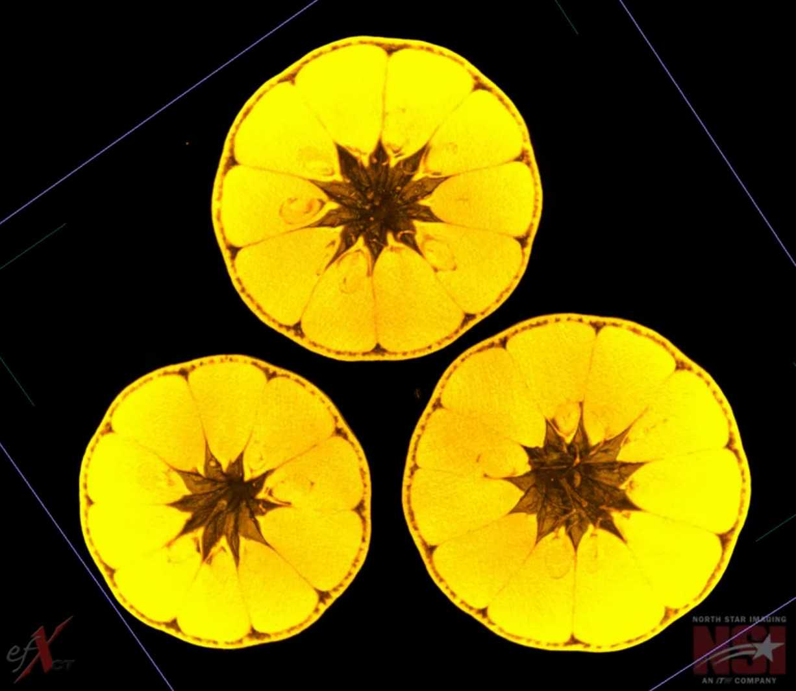
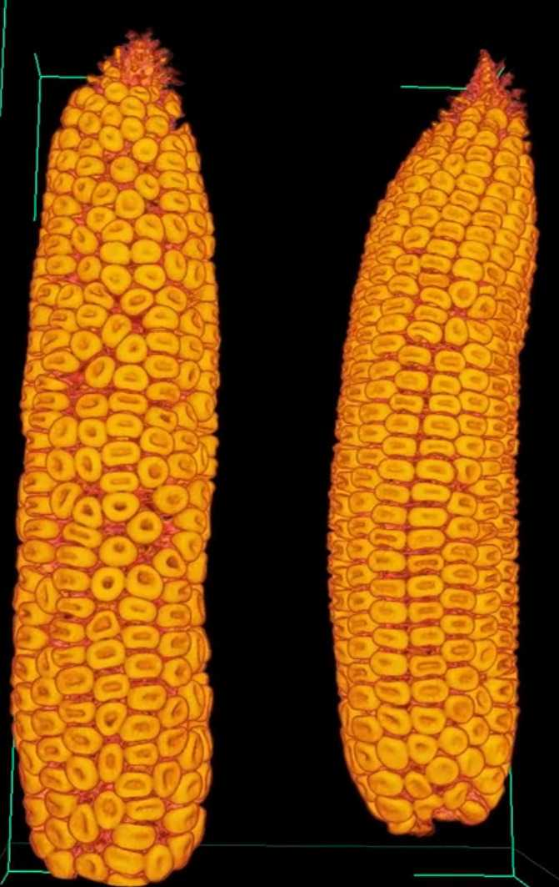
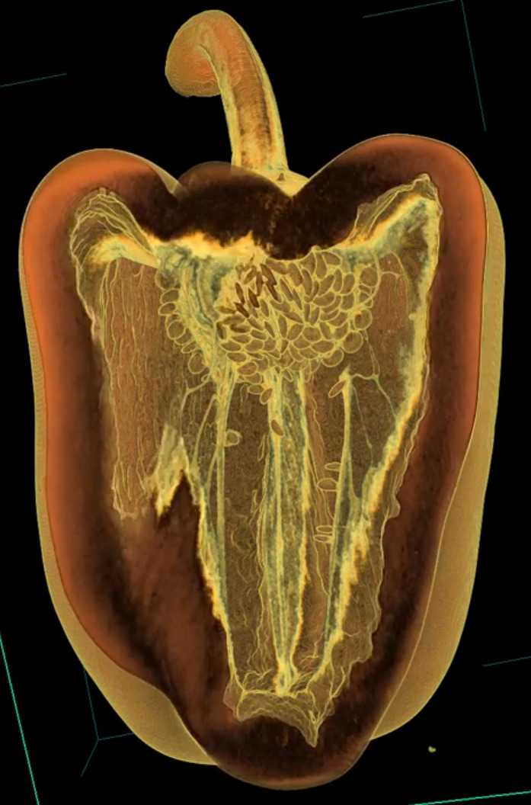

Data Science for Life Sciences

Credits: xkcd.com
From multi-omics sequencing to precision health medicine, from geographical information systems to digital agriculture, life sciences in general face mountains of data that must be efficiently analyzed and summarized. With recent technological advances, we are now able to collect precise information of gene expression levels across tissues, molecular structure of proteins, minute soil and climate variations across time and space, detailed canopy and pasture drone imagery, spatial organization of cells, swarms, herds, and people at different scales, etc. As science and technology transition into a data-driven era, meaningful interpretation of these large datasets is a limiting factor. The solutions to grand societal challenges we face lie in data science.
I am excited to be at the forefront of designing, developing, and teaching a brand new series of courses on Data Science for biology- and biology-adjacent minded students. Recently I've been thinking a lot about data science in an AI world. Data science at its core is NOT coding, stats, or math. Those are just means to an end and AI will likely overtake a good chunk of those tasks. Data science at its core IS storytelling: how do you start with a Excel and tell me a story with good and convincing visualizations. AI should never overtake that part.
With that in mind, I have developed my courses as series of worksheets (Jupyter Notebooks) for a flipped classroom. Students watch videos and play with basic code on their own, and then they come to class to work on more complex examples and exercises. I am there to troubleshoot. Every session (in-class assignments) starts discussing a graph from a published life sciences paper, specifically we ask "What is the story that this graph/table tell us?" Then the rest of the session is dedicated to use Python and stats to reproduce the results in the paper with the paper's own data (I curate papers with raw data publicly available). In this context, Python and stats are means to an end: the end is to tell a story starting with a data file.
We mix data literacy, data visualization, and data reproducibility all at once. With real examples instead of fabricated or sanitized ones.
- PLNT_SCI 2500: Data Science for Life Sciences I (MU)
- Spring 2026
- Spring 2025 (offered as PLNT_SCI 2002 Topics)
- PLNT_SCI 3550: Data Science for Life Sciences II (MU)
- Fall 2026
- PLNT_SCI 9100: Computational Models for Life Sciences (MU)
- Fall 2026 (offered as PLNT_SCI 8001 Topics)

Xray CT scan of scarlet emperor mandarins
Observing apple vasculature

Couple of corn ears
Interior of a corn ear
Agave crossed with Manfreda

A cavernous bell pepper!
Quoting Dan C: "Everytime you see a cactus, you should feel awe."
Spiraling with haworthia